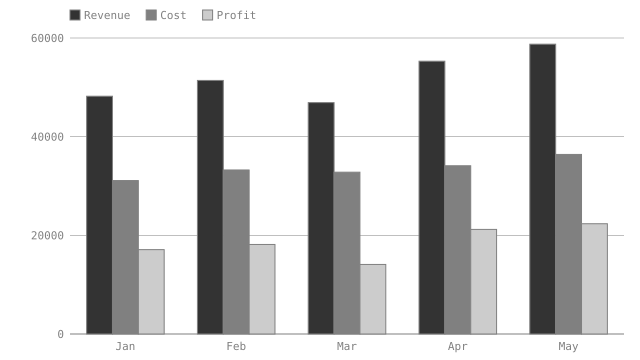
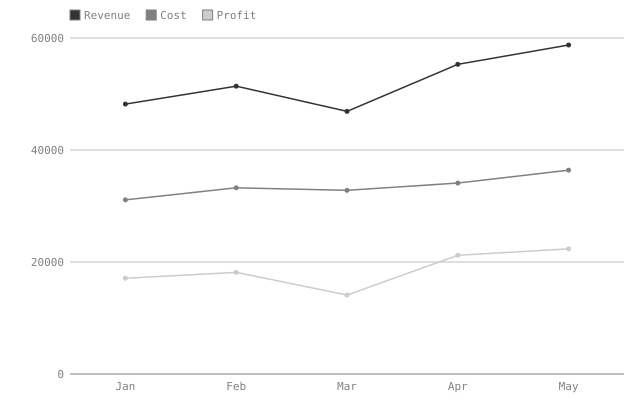
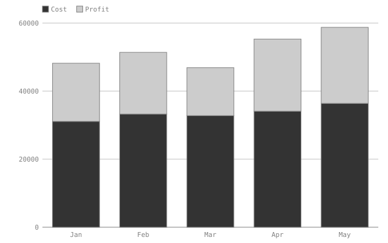
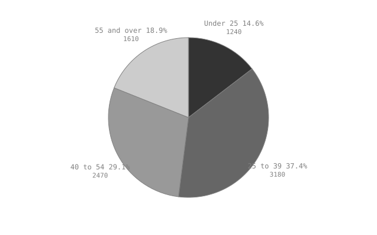
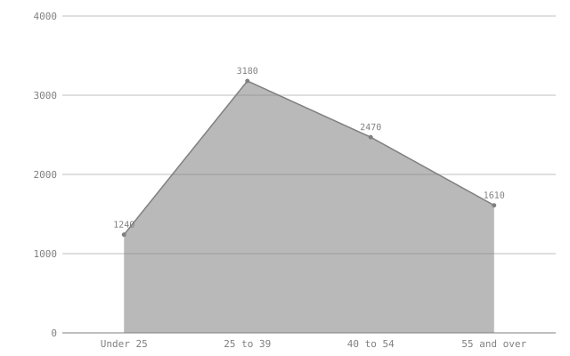

# Quarterly review — a worked example with charts
Quarterly review — a worked example with charts
This document is part of the acceptance suite. It exists to exercise **generated artifacts**: the two charts below are derived from the tables on this page, written by `visimark fmt`, and verified by `visimark check`.
This document is part of the acceptance suite. It exists to exercise
generated artifacts: the two charts below are derived from the tables on
this page, written by visimark fmt, and verified by visimark check.
Nothing here is an invoice. Charts belong on data that is worth looking at as a shape — a trend over months, a split across segments — and the worked invoice is deliberately left alone.
Nothing here is an invoice. Charts belong on data that is worth looking at as a shape — a trend over months, a split across segments — and the worked invoice is deliberately left alone.
## Sales
Sales
Revenue and cost are human input; profit is computed.
Revenue and cost are human input; profit is computed.
| Month | Revenue | Cost | Profit | |-------|---------:|---------:|---------:| | Jan | 48200.00 | 31100.00 | 17100.00 | | Feb | 51400.00 | 33250.00 | 18150.00 | | Mar | 46900.00 | 32800.00 | 14100.00 | | Apr | 55300.00 | 34100.00 | 21200.00 | | May | 58750.00 | 36400.00 | 22350.00 |
| Month | Revenue | Cost | Profit |
|---|---|---|---|
| Jan | 48200.00 | 31100.00 | 17100.00 |
| Feb | 51400.00 | 33250.00 | 18150.00 |
| Mar | 46900.00 | 32800.00 | 14100.00 |
| Apr | 55300.00 | 34100.00 | 21200.00 |
| May | 58750.00 | 36400.00 | 22350.00 |
```vmark #sales Profit = Revenue - Cost total_revenue = SUM(Revenue) total_profit = SUM(Profit) assert total_profit > 0 chart performance as bar of Revenue, Cost, Profit labelled Month aspect 16:9 chart trend as line of Revenue, Cost, Profit labelled Month chart split as stacked-bar of Cost, Profit labelled Month ```
Profit = Revenue - Cost
total_revenue = SUM(Revenue)
total_profit = SUM(Profit)
assert total_profit > 0
chart performance as bar of Revenue, Cost, Profit labelled Month aspect 16:9
chart trend as line of Revenue, Cost, Profit labelled Month
chart split as stacked-bar of Cost, Profit labelled Month
Revenue across the five months totals **260550.00**<!--vmark=sales.total_revenue-->, against a profit of **92900.00**<!--vmark=sales.total_profit-->.
Revenue across the five months totals 260550.00, against a profit of 92900.00.
<!--vmark=sales.performance-->

The chart takes three series from one sheet, so they share a row count by construction. It carries an explicit `aspect 16:9`; the pie below takes the default `16:10`.
The chart takes three series from one sheet, so they share a row count by
construction. It carries an explicit aspect 16:9; the pie below takes the
default 16:10.
<!--vmark=sales.trend-->

The same three columns, drawn as a line instead of grouped bars — points share the exact x position bar centers its groups on.
The same three columns, drawn as a line instead of grouped bars — points share the exact x position bar centers its groups on.
<!--vmark=sales.split-->

`Cost` and `Profit` stack to exactly `Revenue`, since `Profit = Revenue - Cost` — a stacked bar is a running total, and this one totals to a column already on the page.
Cost and Profit stack to exactly Revenue, since Profit = Revenue - Cost
— a stacked bar is a running total, and this one totals to a column already on
the page.
## Audience
Audience
| Segment | Headcount | |-------------|----------:| | Under 25 | 1240 | | 25 to 39 | 3180 | | 40 to 54 | 2470 | | 55 and over | 1610 |
| Segment | Headcount |
|---|---|
| Under 25 | 1240 |
| 25 to 39 | 3180 |
| 40 to 54 | 2470 |
| 55 and over | 1610 |
```vmark #audience total = SUM(Headcount) chart mix as pie of Headcount labelled Segment chart spread as area of Headcount labelled Segment ```
total = SUM(Headcount)
chart mix as pie of Headcount labelled Segment
chart spread as area of Headcount labelled Segment
The sample covers **8500**<!--vmark=audience.total--> people.
The sample covers 8500 people.
<!--vmark=audience.mix-->

`Headcount` is a human-written input column with no decimals, so its total writes bare — the same precision inference every other value gets.
Headcount is a human-written input column with no decimals, so its total
writes bare — the same precision inference every other value gets.
<!--vmark=audience.spread-->

A single series needs no legend and no overlap to justify the area engine's fixed fill opacity — it exists for the case a second series would put on top of this one, and applies uniformly whether or not that happens.
A single series needs no legend and no overlap to justify the area engine's fixed fill opacity — it exists for the case a second series would put on top of this one, and applies uniformly whether or not that happens.
## What `check` guarantees here
What check guarantees here
`visimark check` proves that all five SVGs on disk are exactly what the current data renders to. Change a `Revenue` cell and the bar chart is `STALE` until `fmt` regenerates it; delete either file and it is `STALE` as missing. What `check` does **not** prove is that the picture is a faithful depiction of the numbers — an artifact's provenance is verifiable, its draughtsmanship is not.
visimark check proves that all five SVGs on disk are exactly what the
current data renders to. Change a Revenue cell and the bar chart is STALE until
fmt regenerates it; delete either file and it is STALE as missing. What
check does not prove is that the picture is a faithful depiction of the
numbers — an artifact's provenance is verifiable, its draughtsmanship is not.